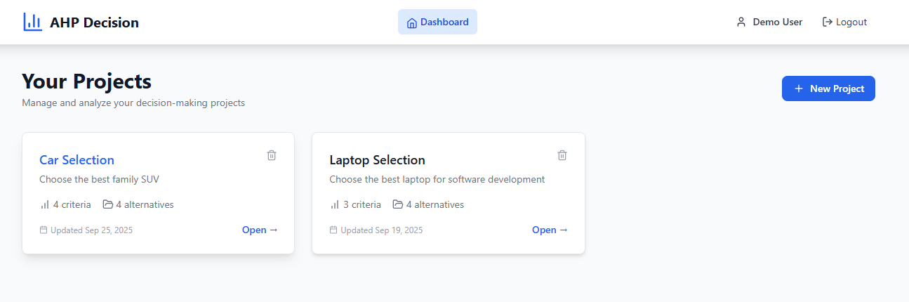
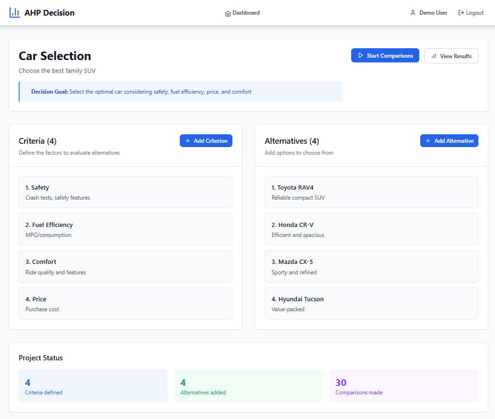
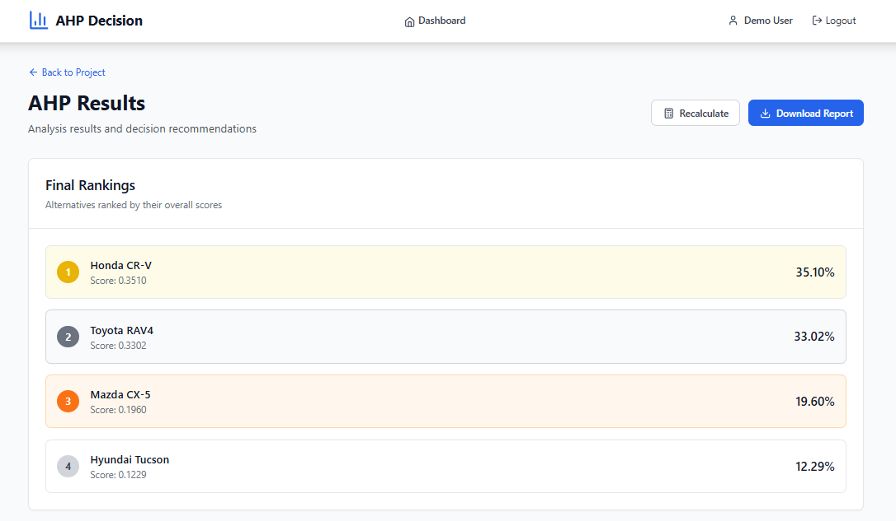
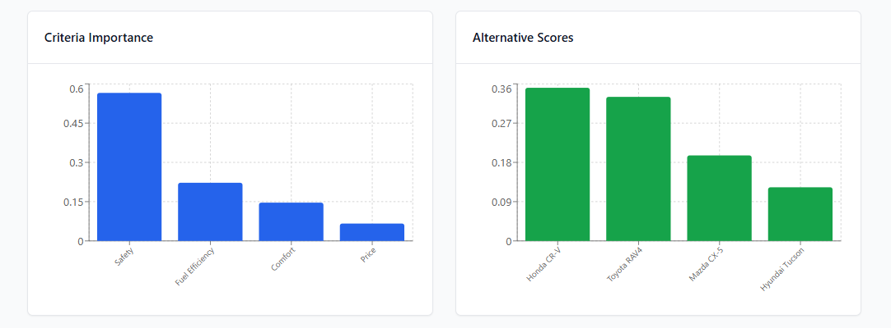
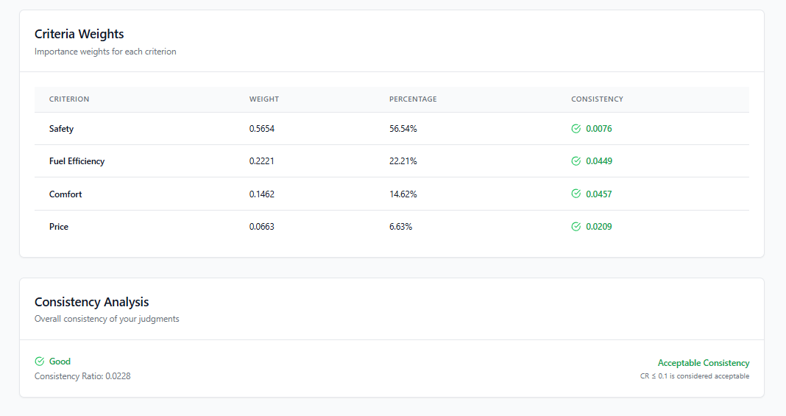
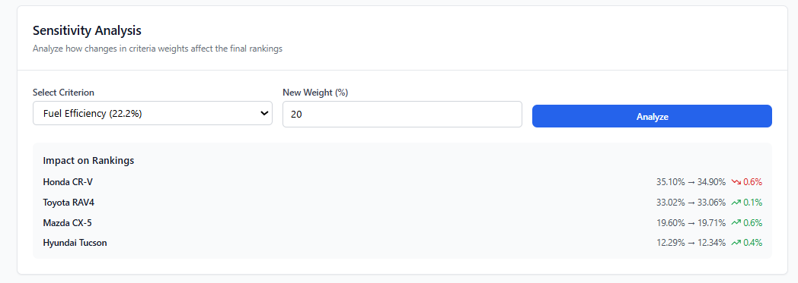

Analytic Hierarchy Process for Multi-Criteria Decision Making
The Analytic Hierarchy Process (AHP) is a structured technique for organizing and analyzing complex decisions, based on mathematics and psychology. It was developed by Thomas Saaty in the 1970s and has been extensively studied and refined since then.
How it works: AHP helps decision-makers find the choice that best suits their goal and their understanding of the problem. It provides a comprehensive and rational framework for structuring a decision problem, representing and quantifying its elements, relating those elements to overall goals, and evaluating alternative solutions.
Explore these real-world decision scenarios solved using AHP with logical pairwise comparisons:
Choose the best laptop for software development considering performance, price, and portability. Compare MacBook Pro, Dell XPS, ThinkPad X1 Carbon, and Surface Laptop Studio.
Select the optimal family SUV considering safety, fuel efficiency, comfort, and price. Compare Toyota RAV4, Honda CR-V, Mazda CX-5, and Hyundai Tucson.
This is a static demo showcasing pre-computed AHP results. The data comes from our full-featured web application shown in the screenshots below:

Project Dashboard

Project Setup & Criteria

Results Overview

Interactive Charts

Detailed Criteria Analysis

Sensitivity Analysis
Complete AHP analysis for software development laptop selection including methodology, comparisons, and recommendations.
Download PDF ReportComprehensive family SUV analysis covering safety, efficiency, comfort, and price considerations with detailed rankings.
Download PDF ReportEach demo follows the complete AHP process:
Built using the Analytic Hierarchy Process
Static demo - no server required • Perfect for GitHub Pages